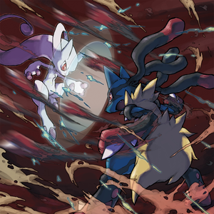

El primer Pokémon en megaevolucionar fue un Lucario, cuyo entrenador era un antepasado de Cornelio (él es su descendiente directo). Para que una megaevolución sea posible, además de una megapiedra, se necesita una piedra activadora, que debe llevar el entrenador (por ejemplo, en un mega-aro o la megapulsera). La piedra activadora permite transformar en ondas energéticas los sentimientos del entrenador hacia sus Pokémon. Su funcionamiento es parecido al del reloj solar de Ciudad Fluxus, que transforma los rayos solares en una extraña forma de luz.
En Pokémon Rubí Omega y Pokémon Zafiro Alfa al pelear contra una entrenadora guay en la ruta 126 te dirá que la megaevolución se originó en Hoenn y que es la mejor región para descubrir los secretos de la megaevolución. De hecho, en Hoenn se descubre que en realidad fue Rayquaza el primer Pokémon en megaevolucionar, sin necesidad de ninguna megapiedra. Según las leyendas del Clan Meteoro, un meteorito cayó en lo que en un futuro sería Arrecípolis y la energía del meteorito (tratándose en realidad de una piedra activadora gigantesca) combinadas con las oraciones de auxilio de los habitantes de Hoenn por detener la lucha de Kyogre y Groudon Primigenios hicieron megaevolucionar a Rayquaza para poder detener la batalla.
Para que un Pokémon megaevolucione, este necesita llevar su respectiva megapiedra, como lo es la Lucarita en el caso de Lucario. Además, el entrenador debe portar la piedra activadora (te la entrega Corelia en la cima de la Torre Maestra, después de haberle ganado en un combate en el gimnasio de Ciudad Yantra). Cabe mencionar que algunas megapiedras se encuentran equipadas en Pokémon que se reparten por evento o en Pokémon que te encuentres en el camino, como el Lucario que se te une en la Torre Maestra, el Torchic de evento con impulso o el Ralts que te intercambia Dianta.
En Pokémon X y Pokémon Y la mayoría se pueden encontrar entre las 20:00 y las 21:00 horas (el tiempo dicho se basa en el reloj interno de la consola, por lo cual se puede configurar para beneficio propio) en distintos puntos de Kalos, únicamente después de pasarte la liga y haber mejorado el mega-aro.
En el caso de la venusaurita, blastoisita o charizardita X3/charizardita Y4, el profesor Ciprés nos entregará una de ellas, según elijamos a Bulbasaur, Squirtle o Charmander respectivamente. Las otras dos las podremos comprar más tarde en la Boutique de las Piedras en Ciudad Luminalia, aunque los precios pueden variar según el estilo que tengas en la ciudad.